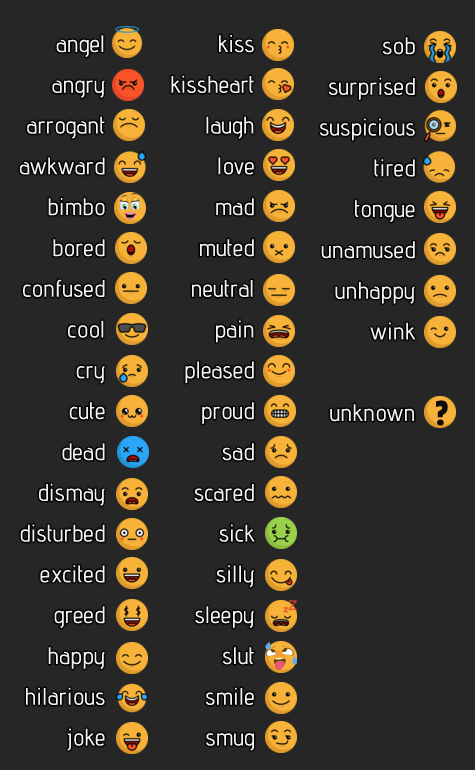

So, you want to write some stuff for AW.
Ultimate grammar incoreectly written Besty guide!
First and foremost, thank you! AW is heavily oriented for user content and modding and with your events we will fill the game with cool lewds much faster! The process is pretty simple actually, you don't need any coding skills, just an ability to form coherent thoughts and a little bit of attention to details. And of course your perverted fantazy! This guide covers only basics you need to know to start slapping your content, more specific information is in another guides you can find in the folder. :D So, let's begin!
POV
Everything must be written in current tense from the second-person view (author describes things happening with the player to the player).Never assume
Thou shall not imply that playable character has any special traits or body. Standard text must be "personality neutral" with optional lines possible with "if" construction. (A bit later we'll talk about it too.).Speech markup
Also, did you just notice this wierd @@.pc; thingy? This way we mark up PC's speech so it will be that pink coursive in the game! Dont forget to put @@ at the end!@@.npc;NPC says!@@.
@@.mono;PC internal monologue (thoughts)@@.
Basic event markup
Every scene starts with some Twine markup looks like this:Scene content goes here.
Scene content goes here.
:: SceneName-2 [nobr]
Content for second scene goes here...
:: SceneName-2 [nobr]
And third one....
You are walking along the road while you notice some weird object on the concrete sidewalk.
@@.mono;Interesting, what is it?@@
:: DildoScene-1-Look [nobr]
You approach the thing and take a better look. It is about 12 inches long and flesh colored.
@@.mono;Wow it seems somebody lost their dildo, ha-ha!@@
You take it in your hand to inspect it and hear some voice from behind.
@@.npc;Hey, did you find it? Thank god!@@
You turn around and see a woman in her 20 running to you.
@@.pc;Oh it is yours?@@
@@.npc;Yeah, I was really worried I lost Arnold! I can't get asleep without it since I am 16!.
:: DildoScene-1-Away [nobr]
You ignore the object and go away.
:: DildoScene-1-Steal [nobr]
@@.pc;No way, It is mine now!@@
You run from the shocked girl with rubber dick in your hand shaking it triumphantly.
:: DildoScene-1-Return [nobr]
@@.pc;Oh, then here, take it!@@
You handle the dildo back to the girl and she looks really happy.
@@.npc;Oh, thank you very much! Oh Arnold, now lie still in the purse, Mommy will wash you and take good care of you, poor boy! Mommy will warm you up in Mommy's secret places in the evening...@@
With rised eyebrows you see the girl going away still talking to her dildo.
Linking
Seems okay, but there is no linking between scenes. How do we go from :: DildoScene-1 to let's say, the :: DildoScene-1-Away? Easy peasy! There are different options. First, is suitable for the situations where there is basically no choice, you just want to split the event in two or more parts for better reading or there is a change in place or time. You can add as much links as you want one after another.Btw, don't forget - every macro must end with >>!
<<dbutt "Enter">><<go "ExampleEvent-42">>
<<dtext "happy">>Open the door
<<dbutt "Stay">><<go "ExampleEvent-43">>
<<dtext "sad">>Don't do it
<</dialogchoice>>
On the next line there is dtext which contains "happy" or "sad". It is the name of emojy that will be shown on the button. So you can add some more emotional iformation to the choice with this small face. Here goes the list of the names for emojis:

Next goes the longer description for action like "Open the door" or something. And in the end we wrap it up with <</dialogchoice>> I am pretty sure there is more info on this somewhere in the files but this pretty much covers the basics of linking for now.
Okies, now lets add those to our event!
You are walking along the road while you notice some weird object on the concrete sidewalk.
@@.mono;Interesting, what is it?@@
<<link "Take a look at it.">><<go "DildoScene-1-Look">></link>>
<<link "Just ignore it.">><<go "DildoScene-1-Away">></link>>
:: DildoScene-1-Look [nobr]
You approach the thing and take a better look. It is about 12 inches long and flesh colored.
@@.mono;Wow it seems somebody lost their dildo, ha-ha!@@
You take it in your hand to inspect it and hear some voice from behind.
@@.npc;Hey, did you find it? Thank god!@@
You turn around and see a woman in her 20 running to you.
@@.pc;Oh it is yours?@@
@@.npc;Yeah, I was really worried I lost Arnold! I can't get asleep without it since I am 16!.
<<dialogchoice>>
<<dbutt "Return">><<go "DildoScene-1-Return">>
<<dtext "awkward">>Give the dildo back to the girl
<<dbutt "Steal">><<go "DildoScene-1-Steal">>
<<dtext "greed">>Try to run away with it!
<</dialogchoice>>
:: DildoScene-1-Away [nobr]
You ignore the object and go away.
<<link "Continue your day.">><<sceneclose>></link>>
:: DildoScene-1-Steal [nobr]
@@.pc;No way, It is mine now!@@
You run from the shocked girl with rubber dick in your hand shaking it triumphantly.
<<link "You got the dildo!">><<sceneclose>></link>>
:: DildoScene-1-Return [nobr]
@@.pc;Oh, then here, take it!@@
You handle the dildo back to the girl and she looks really happy.
@@.npc;Oh, thank you very much! Oh Arnold, now lie still in the purse, Mommy will wash you and take good care of you, poor boy! Mommy will warm you up in Mommy's secret places in the evening...@@
With rised eyebrows you see the girl going away still talking to her dildo.
<<link "Continue your day.">><<sceneclose>></link>>
"Has" macro
Let's talk about <<has>> macro which is a very important instrument.<<orhas slut>>@@.pc;Oh yiss! I wan't it sooo bad! Put it in me!@@
<<or>>@@pc;Oh, okay, if you really want it...@@
<</has>>
MUTATIONS: "milk", "acid", "birthCon", "multiple", "gestate", "cycle", "twinWomb", "period", "immune", "mouth", "contort", "cumpire", "pseudoPreg", "elastic", "litePhero", "fertStorm", "goddess", "pheromone"
OTHER: "intro", "extro", "op", "cl" (last two are open and closed personalities)
TRAITS: "caring", "bitch", "maternal", "romantic", "deceptive", "devious", "persuasive", "perceptive", "forgetful", "forgiving", "lowEsteem", "picky", "crude", "friendly", "approachable", "relaxed", "flirty", "materialist"
AND TRAITS OPPOSITES: "uncaring", "kind", "hatesKids", "aromantic", "honest", "straightForward", "follower", "oblivious", "goodMemory", "vengeful", "narcissist", "lowStandards", "refined", "unfriendly", "unapproachable", "ambitious", "shy", "hippy"
Macro for PC values
Last thing you need to know before starting is adding some stuff to the PC values:<<happy -1>> (makes PC less happy)
<<stress 10>> (makes PC more stressed) (the scale is from 0 to 100)
<<anger 1>> (0 10) <<addtime 1>> (adding any amount of time in minutes to the ingame clock)
<<add X to the inventory>>
<<That fancy "texting" display you used in fem prologue>>